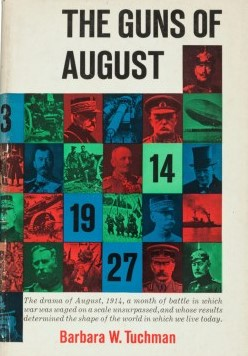

The Guns of August (1962) (published in the UK as August 1914) is a volume of history by Barbara W. Tuchman. It
is centered on the first month of World War I. After introductory chapters, Tuchman describes in great detail
the opening events of the conflict. Its focus then becomes a military history of the contestants, chiefly the
great powers.The Guns of August thus provides a narrative of the earliest stages of World War I, from the decisions
to go to war, up until the start of the Franco-British offensive that stopped the German advance into France. The
result was four years of trench warfare. In the course of her narrative Tuchman includes discussion of the plans,
strategies, world events, and international sentiments before and during the war.The book was awarded the Pulitzer
Prize for General Non-Fiction for publication year 1963,[1] and proved very popular. Tuchman later returned to the
subject of the social attitudes and issues that existed before World War I, which she had touched upon in The Guns
of August, in a collection of eight essays published in 1966 under the title.
Summary
A funeral
In May 1910 the funeral of Edward VII of the United Kingdom drew the presence of nine kings, one being Kaiser
Wilhelm II of Germany. Wilhelm, or William, was Edward's nephew. The opening chapter begins and ends with a
description of the royal funeral and in between provides a discussion of the continent's political alliances
and the diplomacy of royalty, all amidst the national rivalries, imperialism, and social Darwinism in the years
leading up to the Great War (1914–1918).
Plans
Chapters 2 to 5 are grouped into a section called "Plans". Addressed is prewar military planning, as done by the
major powers in Europe. Included are the German Schlieffen plan, France's offensive Plan XVII, joint British and
French arrangements, and Russia's approach to a future European war.
Outbreak
"Outbreak" starts with a short introduction, which briefly mentions the event that triggered World War I. On June
28, 1914, in Sarajevo, Gavrilo Princip, a Serbian nationalist, assassinated the heir apparent to the throne of
Austria-Hungary, the Archduke Franz Ferdinand and his wife Sophie, Duchess of Hohenberg. European-wide diplomacy
and military preparations during July are then referenced.
Chapters 6 to 9 commence with August 1914. Discussed and probed are maneuvers by leading politicians, diplomatic affairs,
and actions undertaken by various armies, during the opening days of the war, August 1 to August 4. Covered are the
Kaiser's hesitation, the struggle by Russia to ensure that its ally, France, would join in the war, France's attempts to
win a guarantee from Britain of her involvement, and Germany's ultimatum to Belgium.
Battle
The bulk of the remainder of the book, chapters 10 to 22, is essentially devoted to the battles and tactical planning on
two fronts, the Western (chapters 11 to 14, 17, and 19 to 22) and the Eastern (chapters 15 and 16). However, Austria,
and the Balkans, are omitted.[Notes 1] Chapters 10 and 18 are devoted to the war at sea.
Intertwined in the narration are the adverse effects of the vanity of the various leaders and insubordination. Also
addressed are some perceptions made among those in the rest of the world, including a critical interpretation of events
that cemented various political views (such as chapter 17). The short "Afterword" then reflects on events of August 1914.
Mediterranean
Tuchman starts the "Battle" section by covering the search by Allied naval forces for the German battlecruiser Goeben in
the Mediterranean (chapter 10). The Goeben finally took refuge in the Dardanelles, waters of the then neutral Ottoman
Empire. Such naval actions set off diplomatic maneuvers, but the event precipitated Turkey's entry into the war on the
side of Germany. The development worked to block Russian import/export via its year-round ports on the Black Sea. That,
in turn, led to the disastrous Gallipoli Campaign.

Author : Barbara W. Tuchman
Country : United States
Language : English
Genre : Military history, narrative history
Published : 1962 (Macmillan)
Media type Print (Hardcover)